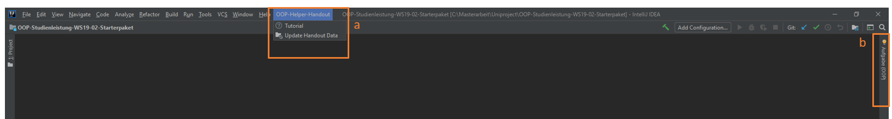

Funktionen des Plugins im Überblick
Dieses Plugin dient der Unterstützung während der Bearbeitung der Studienleistung. Inhalte, die für die Studienleistung benötigt werden, werden teilweise interaktiv dargestellt.Das Plugin teit sich auf in einen zusätzlichen Menüeintrag (a) und ein ToolWindow (b) mit weiteren Tabs. 
Menüeintrag
Das Menü gliedert sich in die Funktionen "Tutorial" und "Update Handout Data".
Über "Tutorial" wird direkt dieser Tutorial-Eintrag im ToolWindow geöffnet und über "Update Handout Data" kannst du manuell überprüfen, ob Änderungen der Inhalte zum Herunterladen vorhanden sind.
ToolWindow
Das ToolWindow besteht aus verschiedenen Tabs (a) und Funktionen in der Toolbar (b)
 Sollte das ToolWindow so schmal sein, dass nicht alle Tabs nebeneinander passen, sind die übrigen eingeklappt neben dem letzten sichtbaren Tab zu finden.
Sollte das ToolWindow so schmal sein, dass nicht alle Tabs nebeneinander passen, sind die übrigen eingeklappt neben dem letzten sichtbaren Tab zu finden.
Wenn der Button für das ToolWindow verschwunden ist. Kann man das ToolWindow über den Menüreiter "View/ToolWindows/Aufgabe(OOP)" wieder herstellen.
Die Tabs gliedern sich in folgende Funktionsbereiche:
Interaktives Handout
In dem Tab "Handout" wird das Handout für die aktuelle Studienleistung dargestellt. Dieses ist interaktiv konzipiert.Du kannst durch einen Klick auf einen hervorgehobenen Klassen- oder Methodennamen, direkt zur passenden Stelle im Code springen.

Des Weiteren funktioniert dies auch umgekehrt. Führst du einen Doppelklick auf den Namen einer Methoden im Code aus, öffnet sich das Handout an der Stelle, an dem diese Methode oder Klasse erklärt wird. Dies funktioniert nur mit den Methoden, von denen du auch in den Code springen kannst und die im Handout erklärt werden.
Aufgaben
Dieser Bereich ist unterteilt in zwei verschieden ToDo-Listen, die du bei abhaken kannst, wenn du die Aufgabe erfüllt hast.Zum einen wird dir bei den "Anforderungen" eine Liste an Aufgaben angezeigt, die dir die Dozenten zur Verfügung stellen. Die Liste kann dir als Unterstützung dienen, die Studienleistung zu bearbeiten, sodass du keine wesentlichen Schritte vergisst. Die Aufgabenbeschreibungen kannst du nicht verändern und auch keine Elemente löschen.
Deine "Eigenen Aufgaben" kannst du beiebig anpassen: Aufgabenbeschreibeungen ändern Aufgaben löschen und neue Aufgaben hinzufügen.
Notizen
In diesem Tab hast du die Möglichkeit dir Notizen zu machen. Zum Beipiel um dir zu notieren, was du bereits erledigt hast oder dir zu merken, woran du als nächstes arbeiten willst, wenn du eine Pause machst.Beim Editieren kannst du den kompletten Text mit Hilfe eines HTML-Editors anpassen und dir selbst ausuchen in welcher Form du diese speichern willst.